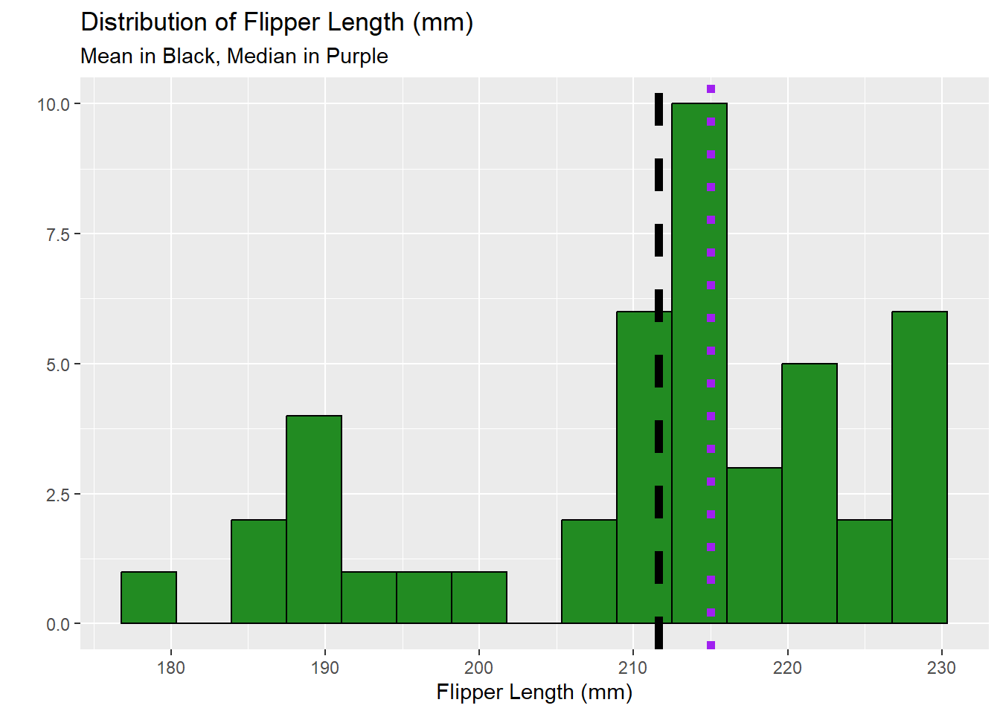
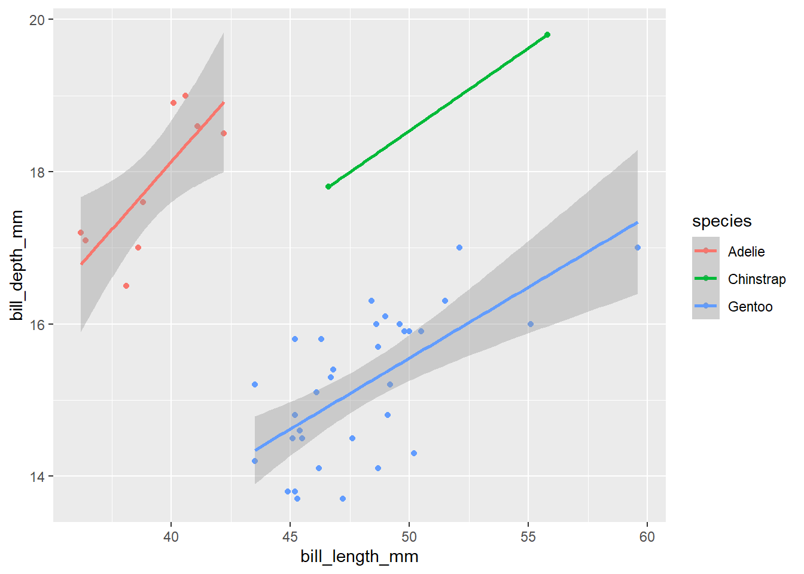

Attaching package: 'kableExtra'
The following object is masked from 'package:dplyr':
group_rows
#Read the penguins_samp1 data file from githubpenguins <-read_csv("https://raw.githubusercontent.com/mcduryea/Intro-to-Bioinformatics/main/data/penguins_samp1.csv")
Rows: 44 Columns: 8
── Column specification ────────────────────────────────────────────────────────
Delimiter: ","
chr (3): species, island, sex
dbl (5): bill_length_mm, bill_depth_mm, flipper_length_mm, body_mass_g, year
ℹ Use `spec()` to retrieve the full column specification for this data.
ℹ Specify the column types or set `show_col_types = FALSE` to quiet this message.
#See the first six rows of the data we've read in to our notebookpenguins %>%head(2) %>%kable() %>%kable_styling(c("striped", "hover"))
species
island
bill_length_mm
bill_depth_mm
flipper_length_mm
body_mass_g
sex
year
Gentoo
Biscoe
59.6
17
230
6050
male
2007
Gentoo
Biscoe
48.6
16
230
5800
male
2008
About Our Data
The data we are working with is a data set on Penguins, which includes 8 features measured on 44 penguins. The features included are physiological features (like bill length, bill depth, flipper length, body mass, etc) as well as other features like the year that the penguin was observed, the island the penguin was observed on, the sex of the penguin, and the species of the penguin.
Interesting Questions to Ask
What is the average flipper length? What about for each species?
Are there more male or female penguins? What about per island or species?
What is the average body mass? What about by island? By species? By sex?
What is the ratio of bill length to bill depth for a penguin? What is the overall average of this metric? Does it change by species, sex, or island?
Does average body mass change by year?
Data Manipulation Tools and Strategies
We can look at individual columns in a data set or subsets of columns in a data set. For example, if we are only interested in flipper length and species, we can select() those columns.
penguins %>%count(island)
# A tibble: 3 × 2
island n
<chr> <int>
1 Biscoe 36
2 Dream 3
3 Torgersen 5
The first graph is showing the number of penguins that inhabit each island. Clearly, the data is not accurate because it is showing that there are only 3 penguins in Dream and 36 penguins in Biscoe.
The second graph goes a step further than the first and shows the number of penguins in each species on each of the islands. We have such little data that the graphs do not seem entirely accurate.
Answering Our Questions
Most of our questions involve summarizing data, and perhaps summarizing over groups. We can summarize data using the summarize() function, and group data using group_by().
Let’s find the average flipper length.
penguins %>%#average for all speciessummarize(avg_flipper_length =mean(flipper_length_mm))
# A tibble: 1 × 1
avg_flipper_length
<dbl>
1 212.
penguins %>%#single species avg lengthfilter(species =="Gentoo") %>%summarize(avg_flipper_length =mean(flipper_length_mm))
# A tibble: 1 × 1
avg_flipper_length
<dbl>
1 218.
penguins %>%#average separated by species (grouped average)group_by(species) %>%summarize(avg_flipper_length =mean(flipper_length_mm))
# A tibble: 3 × 2
species avg_flipper_length
<chr> <dbl>
1 Adelie 189.
2 Chinstrap 200
3 Gentoo 218.
This graph displays the average flipper length for each species (in mm). There is a 30mm difference between the longest and shortest average flipper length among the species.
How many of each species do we have?
penguins %>%count(sex)
# A tibble: 2 × 2
sex n
<chr> <int>
1 female 20
2 male 24
This graph shows the number of males and females among the penguins (the number of males+females equals the same number when the number of different species among the islands are counted).
We can use mutate() to add new columns to our data set.
#To make a permanent change, we need to store the results of our manipulationspenguins_with_ratio <- penguins %>%mutate(bill_ltd_ratio = bill_length_mm / bill_depth_mm)#Average Ratiopenguins %>%mutate(bill_ltd_ratio = bill_length_mm / bill_depth_mm) %>%summarize(mean_bill_ltd_ratio =mean(bill_ltd_ratio),median_bill_ltd_ratio =median(bill_ltd_ratio))
# A tibble: 3 × 2
year mean_body_mass
<dbl> <dbl>
1 2007 5079.
2 2008 4929.
3 2009 4518.
This graph displays the mean body mass for penguins per year (2007, 2008, 2009)
Data Visualization
What is the distribution of penguin flipper lengths?
What is the distribution of penguin species?
Does the distribution of flipper length depend on the species of penguin?
penguins %>%ggplot() +geom_bar(mapping =aes(x = species)) +labs(title ="Counts of Penguin Species", x ="Species", y ="Count")
penguins %>%ggplot() +geom_histogram(mapping =aes(x = bill_length_mm), color ="white", fill ="blue") +labs(title ="Distribution of Bill Lengths", x ="Bill Length (mm)", y ="Count")
`stat_bin()` using `bins = 30`. Pick better value with `binwidth`.
penguins %>%ggplot() +geom_histogram( aes(x = flipper_length_mm),bins =15,fill ="forestgreen",color ="black") +labs(title ="Distribution of Flipper Length (mm)",subtitle ="Mean in Black, Median in Purple",y ="", x ="Flipper Length (mm)") +geom_vline(aes(xintercept =mean(flipper_length_mm)), lwd =2, lty ="dashed") +geom_vline(aes(xintercept =median(flipper_length_mm)), lwd =2, lty ="dotted", color ="purple")
Warning: Using `size` aesthetic for lines was deprecated in ggplot2 3.4.0.
ℹ Please use `linewidth` instead.

We will now look at the distribution of species.
penguins %>%ggplot() +geom_bar(mapping =aes(x = species), color ="black", fill="blue") +labs(title ="Counts of Penguin Species", x ="Species", y ="Count")
These graphs were our first attempts at displaying the results of our research. We played with the colors, sizes, titles etc. The first graph is the most simple, with no color or x/y axis titles. With the second graph, we added bright colors to make it more visible and labeled the titles on our graph. The third graph is more detailed, different color choices are easier on the eyes, and we included the mean and median using dotted lines.
Let’s make a scatter plot to see if bill length is correlated with bill depth.
penguins %>%ggplot() +geom_point(aes(x =bill_length_mm, y = bill_depth_mm, color = species)) +geom_smooth(aes(x =bill_length_mm, y = bill_depth_mm, color = species), method ="lm")
`geom_smooth()` using formula = 'y ~ x'
Warning in qt((1 - level)/2, df): NaNs produced
Warning in max(ids, na.rm = TRUE): no non-missing arguments to max; returning
-Inf

This beautiful scatter plot is the first attempt at a scatter plot using RStudio. It displays both the bill length and bill depth along with a line of best fit.